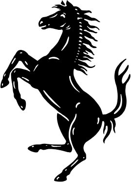

A Ferrari egy legendás olasz sportautó-gyártó, amely 1947 óta gyárt világszínvonalú járműveket.
A cég ikonikus vörös színe és az ágaskodó ló logója szimbóluma az eleganciának és a teljesítménynek.
A Ferrari autók a versenyautó-technológia csúcsát képviselik és a világ egyik legkeresettebb luxusautó márkája.

A Ferrari 499P egy csúcstechnológiás Le Mans Hypercar (LMH) autó, amelyet azzal a céllal építették, hogy fél évszázad után visszajuttassa a Prancing Horse-t az endurance versenyek legmagasabb szintjére.
A Ferrari a 499P-t egyetlen céllal tervezte: hogy részt vegyen a FIA World Endurance Championship Hypercar osztályában, beleértve a legendás Le Mans-i 24 órás versenyt is.
A "499" név a motor egységnyi hengerűrtartalmára utal köbcentiméterben, míg a "P" betű a "Prototype (prototípus)" szót jelenti, utalva a Ferrari versenyzés aranykorára.
Le Mans mellett a Ferrari máshol is nagyon kiemelkedő eredményeket ért el. Egy példa erre, a 2025-ös Qatari szezonnyitó, ahol a 3 Ferrari is a dobogón végzett.

A Ferrari az AF Corse-val együttműködve hozta létre a hivatalos Ferrari AF Corse gyári csapatot.
A 499P a 2023-as WEC-szezonban debütált, és hamarosan bizonyította versenyképességét, ötvözve az olasz mérnöki precizitást a kitartó endurance-versenyzés fegyelmezettségével. Ez a modell a Ferrari visszatérését jelenti a prototípus-versenyzésbe, egy olyan géppel, amely ötvözi a hagyományt és az innovációt, a teljesítményt és a hatékonyságot, az érzelmeket és a mérnöki tudást.
| Év | Eredmény | Csapat |
|---|---|---|
| 2025 | 1. hely | AF Corse |
| 2024 | 1. hely | Ferrari AF Corse |
| 2023 | 1. hely | Ferrari AF Corse |
| Eredmény | db |
|---|---|
| 1. hely | 12 |
| 2. hely | 8 |
| 3. hely | 11 |